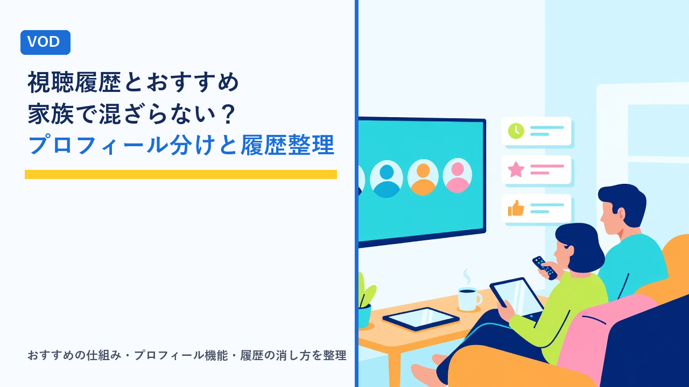

VODの視聴履歴・おすすめ機能の仕組み：家族で使うときのプロフィール分けと履歴の整理方法
更新日：2026-10-26

動画配信サービス（VOD）を家族で使っていると、「子どものアニメばかりがおすすめに並ぶ」「自分が見ていた続きがどこかに行った」「家族に自分の視聴履歴を見られたくない」といった小さな困りごとが出てきます。これらはほとんどの場合、1つのアカウントを家族全員で共有していて、視聴履歴とおすすめが混ざっていることが原因です。この記事では、VODのおすすめ機能がどのような材料で決まるのか、プロフィール機能で何が分けられるのか、そして視聴履歴やおすすめを整理する具体的な方法を客観的にまとめます。特定のサービスをすすめるものではなく、仕組みの理解と設定の考え方を扱います。
おすすめ機能はどんな材料で決まるのか
VODのトップ画面に並ぶ「あなたへのおすすめ」「〇〇を見たあなたに」といった一覧は、サービスごとに細かな計算方法は異なるものの、おおむね次のような材料をもとに作られています。
- 再生した作品とその視聴時間：最後まで見たか、途中でやめたかも含めて記録されます。数分で止めた作品は「合わなかった」と判断される材料になることがあります。
- 評価（高評価・低評価・興味なし）：明示的に付けた評価は、再生の記録より強く反映されやすい材料です。
- マイリスト・お気に入りへの追加：見ていなくても「興味がある」として扱われます。
- 検索した言葉と、検索結果から開いた作品：検索だけで再生しなくても、ジャンルの傾向として使われることがあります。
- 見ている時間帯・端末：平日夜はドラマ、休日昼はアニメ、といった傾向が反映されることがあります。
- 似た視聴傾向の人が見ている作品：自分の記録だけでなく、他の利用者の傾向と照合して提案する方式も広く使われています。
ここで重要なのは、これらの材料がプロフィール単位（プロフィール機能がない場合はアカウント単位）で記録されることです。家族全員が同じプロフィールで見ると、子どもの再生もパートナーの再生も1人分として合算され、「誰にも合わないおすすめ」ができあがります。
家族で1つのアカウントを使うと起きる混線
プロフィールを分けずに使っていると、おすすめ以外にも次のような影響が出ます。
- 「視聴中」「続きから再生」の一覧が混ざる：自分が途中まで見たドラマの横に、家族が見ていた作品が並び、どこまで見たかを探す手間が増えます。
- 再生位置が上書きされる：同じ作品を家族が別々に見ていると、「続きから」の位置が最後に見た人のところに動きます。
- 字幕・吹き替え・画質などの設定が共有される：1人が吹き替えに変えると、他の人も次回から吹き替えで始まることがあります。設定の仕組みはVODの字幕・吹き替え・音声設定の違いまとめで整理しています。
- 視聴履歴が家族に見える：履歴やおすすめの一覧から、何を見ていたかが家族に分かる状態になります。
- 年齢に合わない作品が子どもの目に入る：大人向けの作品がおすすめやトップ画面に並び、子どもがそのまま再生できる状態になります。
これらは「サービスの不具合」ではなく、1人用に設計された記録を複数人で共有していることによる自然な結果です。解決の基本は、人ごとにプロフィールを分けることです。
プロフィール機能でできること・できないこと
多くのVODには、1つの契約の中に複数の「プロフィール」を作り、人ごとに切り替える機能があります。ただし、分けられる範囲はサービスによって差があるため、何が分かれて何が共有のままかを整理しておきます。
| 項目 | プロフィールで分かれるのが一般的 | 補足・注意点 |
|---|---|---|
| 視聴履歴・「視聴中」一覧 | 分かれる | プロフィール単位で記録されるため、切り替えれば自分の履歴だけになる |
| おすすめの一覧 | 分かれる | 新しいプロフィールは材料がないため、しばらくは一般的な人気作が並ぶ |
| マイリスト・お気に入り | 分かれる | サービスによってはアカウント共通のものもある |
| 字幕・音声・再生設定 | 分かれることが多い | 端末側の設定（テレビアプリの画質など）は共有のことがある |
| 年齢制限（子ども用プロフィール） | 分かれる | 大人のプロフィールに暗証番号（PIN）を付けないと切り替えで回避される |
| 料金・支払い・契約プラン | 共有 | プロフィールを増やしても料金は変わらないのが一般的 |
| 同時視聴できる台数 | 共有（プランで決まる） | プロフィール数の上限と同時視聴数の上限は別のルール |
| ダウンロード済みの作品 | 端末・プロフィールごとに異なる | ダウンロードの台数上限はアカウント全体で数えるサービスが多い |
| レンタル・購入した作品 | 共有が多い | アカウント単位の購入として扱われ、どのプロフィールからも見られることが多い |
プロフィールの作成数上限、子ども用プロフィールの有無、PINの設定可否はサービスによって異なります。同時視聴数やアカウント共有の範囲については動画配信サービスの家族アカウント・同時視聴ルールまとめをご覧ください。
プロフィールを分けるときの手順と決めごと
プロフィールの作成自体は数分で終わりますが、家族で使う場合は「誰がどれを使うか」の決めごとを先にしておくと混乱が減ります。
- 人数分のプロフィールを作る：アカウント設定や「プロフィールの管理」から追加します。名前とアイコンを分かりやすくしておくと、テレビのリモコン操作でも選び間違いが減ります。
- 子どもには子ども用プロフィールを割り当てる：年齢区分を設定すると、対象外の作品が一覧や検索に出なくなります。
- 大人のプロフィールにPINを設定する：子どもが大人のプロフィールに切り替えるのを防ぐための設定で、これがないと子ども用プロフィールの意味が薄れます。
- 「最初に出るプロフィール」を確認する：アプリを開いたときに自動で選ばれるプロフィールがあると、家族が自分のものだと気づかず再生してしまうことがあります。起動時にプロフィール選択画面を表示する設定があれば有効にします。
- 既存の履歴の扱いを決める：これまで共有していたプロフィールは、誰か1人が引き継ぐか、「家族共用」として残すかを決めます。他の人は新しいプロフィールで始めるため、おすすめが整うまで少し時間がかかります。
視聴履歴とおすすめを整理する方法
プロフィールを分けた後、あるいはプロフィール機能がないサービスでも、履歴とおすすめを整える手段はいくつかあります。
| 方法 | 効果 | 注意点 |
|---|---|---|
| 視聴履歴から特定の作品を削除する | その作品が履歴と「視聴中」から消え、おすすめの材料からも外れることが多い | サービスによっては履歴の表示だけ消え、おすすめには残ることがある。再生位置も消えるため、続きを見る予定の作品は消さない |
| 「視聴中」から非表示にする | 見るのをやめた作品が「続きから再生」に並ばなくなる | 履歴の削除とは別の操作で、おすすめへの影響は小さいことが多い |
| 評価を付ける・変更する | 「興味なし」「低評価」を付けると、同じ傾向の作品がおすすめに出にくくなる | 反映には日数がかかることがある。付け方によっては好みの作品まで減る |
| マイリストを整理する | 見る予定のない作品を外すと、その傾向のおすすめが減る | マイリストは「興味あり」の強い材料として扱われるため、ため込みすぎに注意 |
| 見たい作品を自分で検索して再生する | 新しい材料が入り、おすすめの方向が変わりやすい | 短時間で止めると逆に「合わなかった」と判断されることがある |
| プロフィールを作り直す | 履歴・おすすめをまっさらにできる | マイリスト・再生位置・設定も消える。レンタル・購入作品はアカウント単位なので残ることが多い |
履歴の削除や非表示は、サービスのアプリ版とブラウザ版で操作できる場所が違うことがあり、スマホアプリでは履歴の削除ができず、ブラウザの「アカウント」画面からのみ可能なサービスもあります。見つからないときは、ヘルプで「視聴履歴 削除」を検索すると手順が出てきます。
子ども用プロフィールを使うときの考え方
子どもがいる家庭では、プロフィール分けは「おすすめの整理」以上に、見せたくない作品を目に入れないための仕組みとして役立ちます。
- 年齢区分の設定：「全年齢」「小学生向け」など段階的に選べるサービスが多く、区分に合わない作品は一覧・検索・おすすめから除外されます。
- 大人のプロフィールのPIN：子どもが切り替えられないようにする設定で、子ども用プロフィールとセットで使います。
- 視聴履歴の確認：子ども用プロフィールの履歴を親が見ることで、何をどれくらい見ているかを把握できます。
- 作品ごとの個別制限：年齢区分に加えて、特定の作品だけを非表示にできるサービスもあります。
年齢区分は作品ごとの登録に基づくため、家庭の判断とずれることもあります。子ども向け機能の詳しい比較は子ども向け作品に強いVODとペアレンタルコントロール機能の比較で整理しています。
履歴を「残す」か「消す」かの判断
視聴履歴はおすすめの材料であると同時に、自分にとっての記録でもあります。すべて消すのが正解とは限らないため、目的に応じて考えます。
- 残しておくと便利な場面：「あの作品、どこまで見たっけ」をすぐ確認できる。おすすめが好みに近づく。複数のサービスを契約しているときに、どのサービスで何を見たかの記録になる（契約の見直しは複数のVODを契約しているときの整理術で整理しています）。
- 消したほうがよい場面：家族共用のプロフィールで見てしまった作品がある。一度だけ見た作品の影響でおすすめが偏っている。見るのをやめた作品が「視聴中」に残り続けている。
- 解約前の扱い：解約後に履歴がどれだけ保持されるかはサービスごとに違います。再契約する可能性があるなら、見たい作品のメモを別に残しておくと安心です。再登録時のルールはVODの無料体験を「はしご」する前に知っておきたい再登録・再体験のルールをご覧ください。
選び方のポイント
- 家族で使うならプロフィール機能の有無を先に確認する：プロフィールが作れないサービスでは、履歴やおすすめの混線を根本的には防げません。
- プロフィール数と同時視聴数を分けて見る：人数分のプロフィールが作れても、同時に見られる台数はプランで決まります。家族の人数と「同時に見る場面があるか」で必要な数を考えます。
- 子どもがいるなら、子ども用プロフィールとPINの両方があるか：どちらか一方だけでは、切り替えで制限を回避できてしまいます。
- 履歴の削除・非表示がどこまでできるか：作品ごとに消せるか、おすすめにも反映されるかはサービスごとに差があります。気になる人は契約前にヘルプで確認します。
- テレビで使う場合は切り替えのしやすさも見る：リモコン操作でのプロフィール切り替えが面倒だと、結局1つのプロフィールを共用しがちです。テレビでの視聴環境はテレビでVODを見る方法まとめで整理しています。
- 完璧を目指さず、まず人ごとに分ける：おすすめの精度は使い続けるうちに整います。最初に人数分のプロフィールを作ることが、どの整理方法よりも効果が大きい一歩です。
よくある質問
視聴履歴を消せば、おすすめもすぐに元に戻りますか？
サービスによって異なります。履歴の削除がおすすめの計算に反映されるサービスもあれば、履歴の表示を消すだけでおすすめの材料には残るサービスもあります。また、反映されるとしても即時ではなく、数日かけて徐々に変わることが一般的です。おすすめを早く整えたいなら、履歴の削除に加えて、見たい作品を自分で検索して再生したり、評価（高評価・興味なし）を付けたりして、新しい材料を積極的に与えるほうが効果が出やすいといえます。
プロフィールを分けても、料金は変わりませんか？
多くのサービスでは、プロフィールの追加は契約プランの範囲内で無料です。ただし、作れる数の上限（4〜6個程度が多い）と、同時に再生できる台数の上限は別のルールで、同時視聴数は料金プランによって変わることがあります。プロフィールを5つ作っても、同時に見られるのが2台までのプランなら、3人目以降は再生できません。家族で使うなら、プロフィール数より同時視聴数のほうが料金に関わる点として重要です。
子ども用プロフィールにすれば、子どもに見せたくない作品は完全に防げますか？
子ども用プロフィールは、年齢区分に合わない作品を一覧や検索に出さない仕組みで、多くの場面では有効です。ただし、子どもが大人のプロフィールに切り替えてしまえば制限は効かなくなります。そのため、大人のプロフィールに暗証番号（PIN）を設定できるサービスでは、設定しておくことが前提になります。また、年齢区分は作品ごとの登録に基づくため、家庭ごとの判断とずれることもあります。仕組みの詳細は子ども向け作品とペアレンタルコントロールの記事で整理しています。